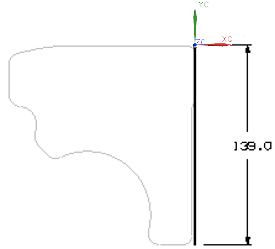
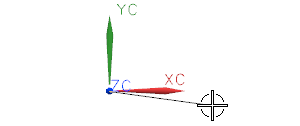
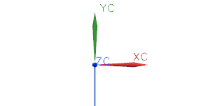

创建一条竖直直线
您需要创建一条始于 WCS，长度为139 mm，沿–Y 方向的直线来定义轮廓的右侧。

-
在跟踪条上的 XC 输入框键入0并按 Tab 键。
YC 输入框的内容被高亮显示。
注释
您正在使用跟踪条来定义直线起始位置，因为您想让位置很精确。
-
在 YC 输入框中，键入0并回车。
在 ZC 输入框中输入东西是没有必要的，只有当您想指定一个不在 XC-YC 平面上时您才需要输入。
一个点显示在图形窗口中 WCS 的原点处。

-
在图形窗口中晃动光标。
您可以看到有一条直线出现，起始于您指定的位置。

-
在 YC 输入框中，键入–139并回车。
由于 XC 的值已经是零，您只需要键入直线沿-YC 轴的长度。
-
在视图工具条上，点击适合窗口
 以便您可以看见整条直线。
以便您可以看见整条直线。
您可能想要调整可视化首选项对话框中的适合百分比，以便在您的几何体周围有更多可用空间，更方便工作。